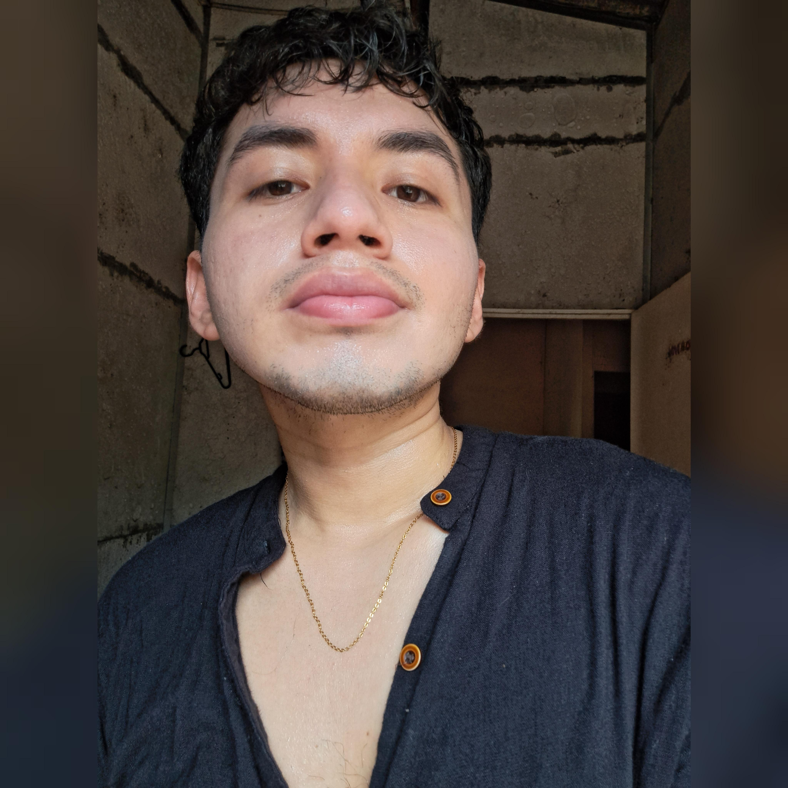

Bienvenido
Hola, soy GERSON RUIZ VELOZ , un aprendis empirico por el desarrollo web.
Bienvenido a mi portafolio
Sobre Mí
Actualmente, un joven lleno de sueños que dia a dia lucha ante las adversidades de la vida y se regocija en la satifaccion de haber sobrellevado tales situaciones, por lo general busco estar tranquilo consigo mismo sobretodo por la carga de estres que suelo tener en ambitos estudiantiles, ya sean tareas o trabajos grupales.
Dentro de mi vida casi escasa de recuerdos tantos buenos como malos, aprendi que son vivencias que se las debe tener ciertamente presentes, recuerdos de amistades que se alegraron que yo haya decidido estudiar una carrera universitaria, personas que en ese minuto de la vida, derramaron lagrimas llenas de emociones , medi cuenta que deje una pequeña huella al ser una persona empatica tanto con personas de confianza como con personas que apenas se les sabe el nombre, es decir con todos aquellos que inpiren confianza.
El romanticismo es algo que se me da de manera esporadica se diria una vez cada vida. Este tipo de vinculos en cierto grado son una manera de entablar afectos con alguien, pueden ser mutuos o no mutuos, pero cuando sucede tal envento mi forma de ver las cosas, cambia, es decir volverse mas atento para ambas partes auque cada persona es un mundo y no se sabe la percepcion del ideal en cuestion por ello la mente juega un papel importante, creando el esfuerzo nesesario para que el vinculo se fortalezca con el paso del tiempo no obstante las vueltas de la vida juegan momentos en los que se debe estar en firme, pero en unos caso se termina aplicando la frase nadie se vuelve a encontrar a una persona dos veces.
Habilidades
- BAILAR
- CONEXIONES ELECTRICAS BASICAS
- DIBUJAR
- COCINAR
- HABLAR INGLES
A continuación se muestran mis habilidades ordenadas por nivel de dominio:
- COCINAR- Avanzado
- DIBUJAR- Intermedio
- BAILAR- Básico
- HABLAR INGLES - Basico
- TRABAJOS DE ELECTRICIDAD - Basico
Galería de Proyectos
| Nombre del Proyecto | Descripción | Año |
|---|---|---|
| Proyecto 1 | Sitio web de comercio electrónico. | 2023 |
| Proyecto 2 | Aplicación de gestión de tareas. | 2022 |
Contacto
Si deseas ponerte en contacto, completa el siguiente formulario: